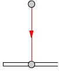
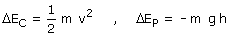

 |
Cambios de energía en la caída:  Durante la caída la bolita solo está sometida a la fuerza peso cuyo trabajo ya está con-tado en la variación de energía potencial, luego T = 0 |
Aplicando el principio de conservación: